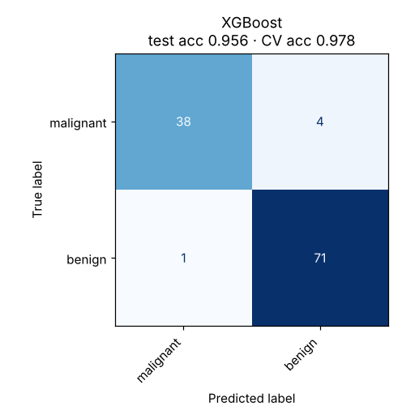

Gradient Boosting
Builds small trees one after another, each one correcting the mistakes the previous ones left behind.
Try it
Experiment: Set depth to 4 and press Add 100 a few times. Train error goes to almost zero while test error creeps up. That’s why boosting uses early stopping.
The idea
Start with a simple guess, the average. Look at what is still wrong: those leftover errors are the residuals. Train a small tree to predict the residuals, add a fraction of its output (the learning rate) to the model, and repeat.
Each tree fixes a little of what remains, like a team where every new member focuses on the cases the others got wrong. In the demo, the dashed orange curve is the newest tree’s correction; the blue curve is the running total.
How it works, step by step
- Start from a constant prediction, such as the mean of the target.
- Compute residuals: target minus current prediction (more generally, the gradient of the loss).
- Fit a small tree (often depth 3–8) to those residuals.
- Add the tree’s output times the learning rate, then repeat from step 2 for hundreds of rounds.
Fₘ(x) = Fₘ₋₁(x) + η · treeₘ(x), where treeₘ is fitted to y − Fₘ₋₁(x)A small learning rate η with more trees usually generalises better than a large η with few trees.
Strengths and weaknesses
Strengths
- Often the most accurate model for tabular data
- Handles mixed feature types and missing values (XGBoost, LightGBM)
- Flexible loss functions (classification, regression, ranking)
- Built-in regularisation
Weaknesses
- Many hyperparameters to tune
- Overfits if you add too many deep trees
- Trees are built in sequence, so training is slower than a forest
- Harder to interpret
Use it when: Structured / tabular data where accuracy matters: risk scoring, sales forecasting, competitions.
Avoid it when: Images, audio or text (use neural networks), or very small data where a linear model is enough.
In this repository
Dataset: Breast Cancer Wisconsin (569 rows, 30 features)

from xgboost import XGBClassifier
model = XGBClassifier(n_estimators=400, learning_rate=0.1, max_depth=3)
model.fit(X_train, y_train, eval_set=[(X_val, y_val)], verbose=False)Full code: models/08_gradient_boosting. Train it on your own data with
python models/08_gradient_boosting/train.py --data your.csv --target column.
Check yourself
Each tree corrects what the ensemble so far gets wrong.
Sequential correction (boosting) versus parallel averaging (bagging).
Many small steps beat a few big ones, at the cost of more trees.
Answer all three correctly to mark this model as learned.